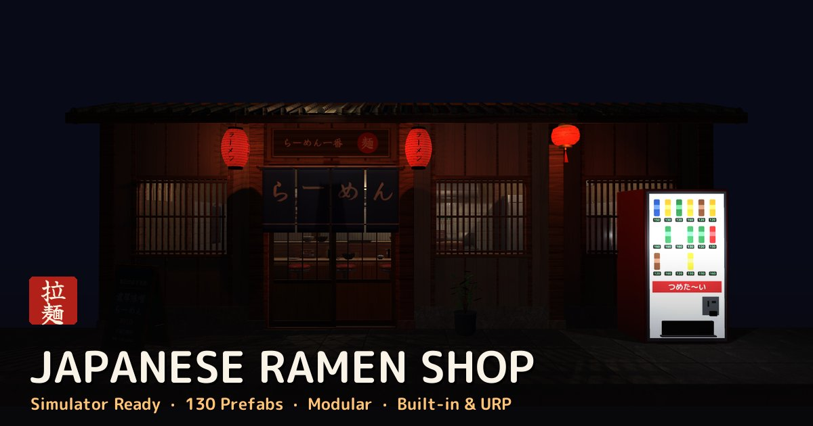

Japanese Ramen Shop
130 prefabs · Modular · Simulator ready
A complete Japanese ramen shop you can build piece by piece — exterior, dining counter and a working kitchen — plus layered ramen that assembles like the real thing.
What's inside
- Modular walls, windows, doors, floors and eaves on a 0.5 m grid
- Counter with chef plating worktop, stools, noren and lanterns
- Kitchen: noodle boiler with water, stock pots, sink, stove, hoods, timers
- Ramen in layers: bowl → tare → broth (4 types) → noodles → 7 toppings
- Grabbable tools: chopsticks, renge, ladles, tebo, pitchers
- LODs, colliders, Built-in + URP materials, demo scene and PDF guide